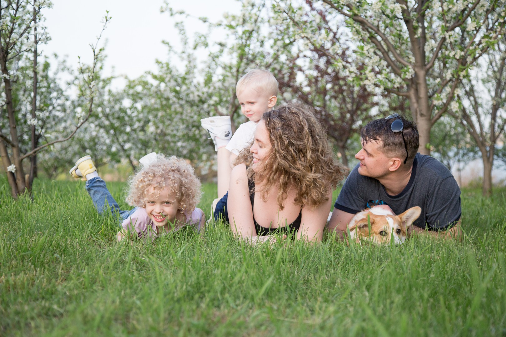

I am 34 old housewife with two kids and husband. Jesus, like insta-crazy-mommy. I wish to play Diablo 2 and retro-games and reading books but i am adult woman instead. Bad luck. I have 2 parrots, but i hate them. And dog also. He makes me thiner. Probably I do not want to work at bodyshop but still I need a resume.
Taganrog State University Of Radioengineering (5 years) - Graduation June 2009
Translation studies is an academic interdiscipline dealing with the systematic study of the theory, description and application of translation, interpreting, and localization. As an interdiscipline, translation studies borrows much from the various fields of study that support translation.
FirstAidSchool.ru (2 months) - Graduation April 2022
First Aid Certification that includes such topis as: CPR, drownings, bleedings, burns, suffocation, loss of consciousness, epilepsy, poisoning, insect bites, breaking bones and transportation.
Piano, Musical School - Graduation May 2002
A lot of classical music. The most useless skill for me. I never played since graduation. Do not force children to do what they do not like. It is useless.
Silence. Games. Poker. Swimming pool. Read. The mountains. Board games. Competition.
I do not likeSlowness. The circus. Chicken hearts and navels. Queues. Noise.
Some examples of my impressive works.
How to be a perfect wife but not actually. 10 lifehacks to trick to get married.
No need to know how to cook borsh anymore. I will tell you how to be married without being a perfect woman.
Read More